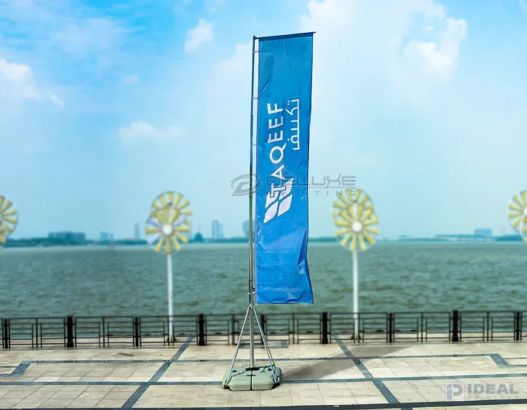
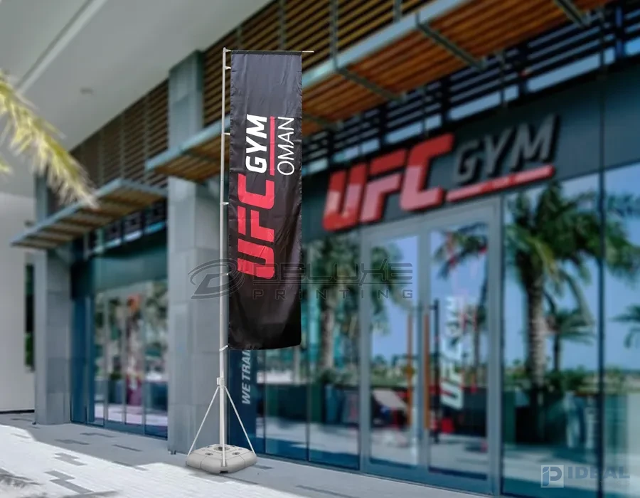
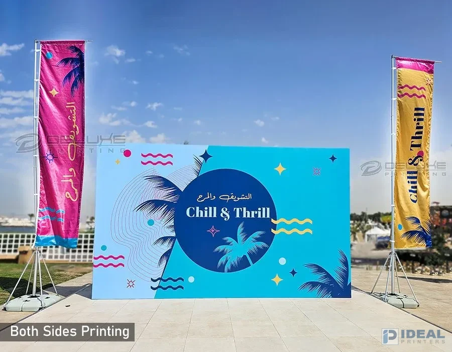

Telescopic Flags




Telescopic flags are a popular choice for businesses and events in Lahore and Pakistan because they are tall and easy to see. They have an adjustable pole that helps them stand high, making them great for outdoor advertising, trade shows, and busy places where you want people to notice. Whether used as a banner or a flag stand, they look professional and are perfect for branding at corporate events, festivals, or big marketing campaigns. At Ideal Printers, our telescopic flags are made from strong materials that can handle Pakistan's weather while showing bright, clear prints of your brand. They are easy to set up, lightweight, and can be customized with your logos, colors, and designs to fit your marketing needs. Whether you need one flag for a small event or many flags for larger promotions, we provide high-quality printing and finishing to help your brand stand out in Lahore, and other places.
| Sizes | Flag size | Pole size |
|---|---|---|
| Medium | 3m x 1m | 5m |
| Large | 4m x 1m | 5m |
Features
|
Fabrics:
Base:
- Knitted Polyester - Single sided other side mirror image
- Satin Gloss - Both sides printing
- Super Matt - Both sides printing
Pole: Aluminium
Base:
Fiber Base
Can be filled with water or sand